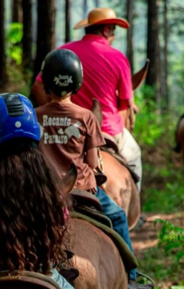
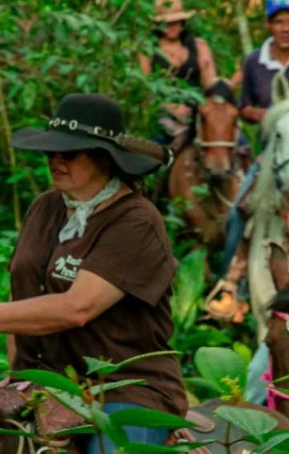
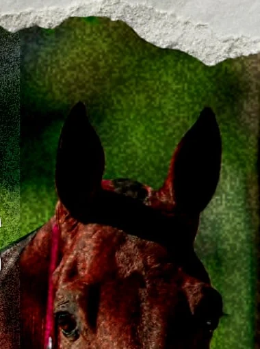

PARELHEIROS · MATA ATLÂNTICA
O caminho
também é destino.
Um passeio a cavalo para descobrir a paisagem de Parelheiros no ritmo da natureza.
Conheça os passeios
São Paulo também tem
caminhos de silêncio.
Entre árvores, cavalos e trilhas, o Recanto Paraíso convida você a conhecer uma paisagem diferente da cidade — com acompanhamento e agendamento prévio.
Planejar meu passeioESCOLHA SEU TEMPO
Um passeio
no seu ritmo.
As opções abaixo seguem os materiais compartilhados pelo Recanto. Selecione uma para preparar a consulta; o botão de contato abre o WhatsApp para confirmar disponibilidade.

PASSEIO · 1 HORA
Um primeiro encontro
com a trilha.
Uma volta a cavalo para viver a natureza com calma e companhia de um instrutor.
- Instrutor incluído
- Seguro Aventura incluído
- Pagamento por PIX, dinheiro ou cartão
R$ 200por pessoa
PASSEIO · 3 HORAS
Mais tempo
para ir além.
Uma experiência mais longa pelas paisagens naturais da região, sempre com agendamento.
- Instrutor incluído
- Seguro Aventura incluído
- Pagamento por PIX, dinheiro ou cartão
R$ 300por pessoa
VIVÊNCIA A CAVALO
Uma experiência
mais próxima.
O Recanto também compartilhou uma opção de vivência. Converse com a equipe para conhecer o formato, duração e detalhes.
R$ 100valor divulgado

ANTES DE VIR
Visita combinada
com antecedência.
Os passeios e vivências acontecem somente com hora marcada. O local não serve refeições; a equipe pode indicar lugares para comer na região.
Para crianças, a informação compartilhada é participação a partir de 7 anos. Confirme com a equipe as orientações para o passeio.
COMO CHEGAR
Rua Visconde
de Montalegre, 499.
Jardim Santa Fé · Parelheiros · São Paulo, SP
Abrir rotas no Google Maps Se o mapa não carregar, use o link para abrir as rotas no Google Maps.FEITO AQUI, COM HISTÓRIA
Lembranças que levam
um pedaço do território.
Além das experiências a cavalo, o Recanto compartilha lembranças e produtos ligados à região e a produtores locais. Consulte o que está disponível.
Veja o InstagramPRÓXIMO PASSO
Vamos encontrar
um dia para ir?
Escolha o passeio e chame a equipe para consultar datas, ponto de encontro e orientações.